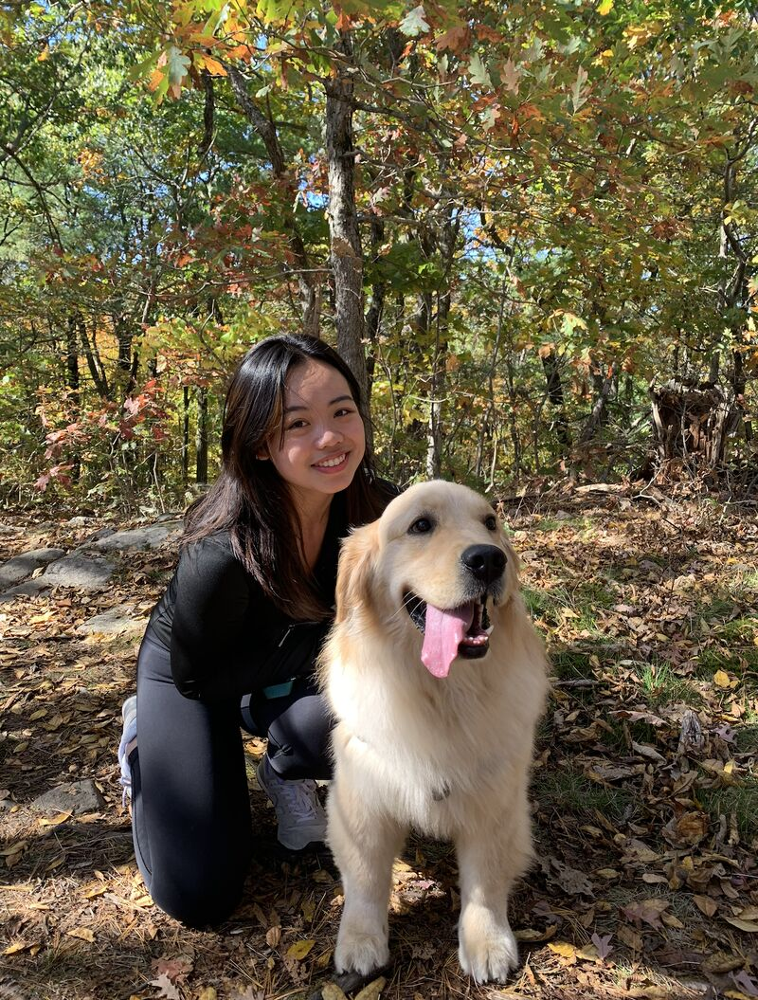

Founders In Motion is the podcast for what founders don't post about.
Hosted by Thea Ngo, an early-stage investor across Australia, Southeast Asia, and the US. It's where the top 1% of early-stage founders share what they're actually doing, what's working, and what's not.

What this is
Most podcasts about startups interview founders after the win. Founders In Motion catches them during it — in the messy middle between conviction and traction, when the answers haven't fully formed yet.
Episodes are recorded as single-guest conversations. No panel debates, no marketing arc. The questions an early-stage investor would actually ask: what did you try first that didn't work, what surprised you about your customers, what made you keep going.
Who Thea is
Thea Ngo is an early-stage investor — sourcing and backing pre-seed and seed founders across Australia, Southeast Asia, and the US. She's spent the last several years on both sides of the table: building, investing, and sitting in rooms where founders make decisions before anyone else can see them.
She started Founders In Motion because she kept noticing the same thing: the conversations she had with founders privately — about how the pre-seed actually closed, what really killed the early product, how it felt to pivot — were never the conversations they had publicly. The podcast is an attempt to make the private version the public one.
What you'll find in the archive
- Customer discovery, done in real life. Shakeel Lala ran 800 conversations before his first Marloo feature. Satya Tumati spent months inside risk teams at financial institutions.
- Pre-seed and seed fundraising mechanics. Celeste Amadon closed in 8 days at 21. Nam Nguyen closed $4M in 48 hours after four YC rejections. Nate Spiteri wrote nearly 1,000 cold emails.
- Pivots, rebuilds, and recoveries. Robert Huynh shut down Nook at $20M valuation and 50K users. Floriye Elmazi rebuilt Sisterwould alone after her co-founder left.
- What product-market fit feels like before it's clear. Andy Miller hand-delivered cans wrapped in newspaper for two years. Jevon Le Roux heard "I just wouldn't come to work tomorrow" and knew.
- APAC and global founders raising from anywhere. Stephen Turban built an 8-figure education business from Ho Chi Minh City. Nhi Nguyen built MaiMoney for a market Western investors couldn't read.
Who this is for
Founders who are pre-traction or early-traction and want unvarnished detail rather than a highlight reel. Investors at any stage who want to hear how decisions actually got made. Operators who are about to start a company and need to know what the first 18 months will really be like.
How to use this site
Browse all 28 episodes — every transcript is searchable; click any guest for full show notes, key claims, chapters, and quotes.
Ask a question — type any founder question on the homepage. The search runs across every transcript and takes you to the exact moment a founder answered it.
Read the 31 founder questions — quick answers to the questions founders ask before they raise, before they pivot, and before they hire. Each one cites specific episodes for the long version.
Connect
If you'd like to be a guest, or you're an investor wanting to discuss a deal, or you've just got something to say: